|
|
HELP FIND THE FOLLOWING LOCATIONS
PAGE 48
DANGER MAN:
The
Professionals (Michael Truman: 1964)
Unknown 1 –
British Embassy, Prague where Mrs
Pearson goes to report her husband missing.
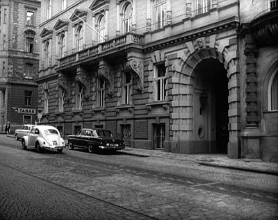
 This
looks like it could be Prague as there are many buildings in this style.
This
looks like it could be Prague as there are many buildings in this style.
Kingswood, Clay Hill, Enfield, Middlesex – John Drake (Patrick McGoohan) arrives at the Prague home of Milos Kaldor (Alex Scott) for a swimming party (swimming pool has been filled in). Here he is introduced to the beautiful Ira (Nadja Regin). The following day he returns to ask a favour of his new friend.
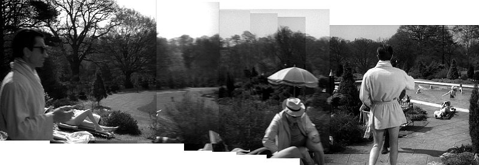
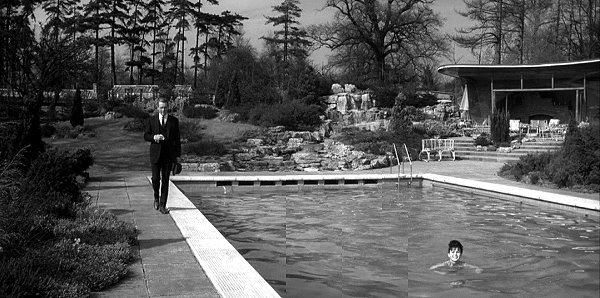
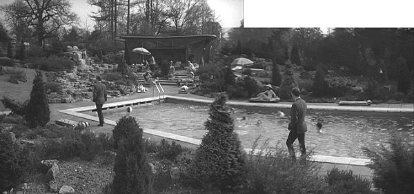
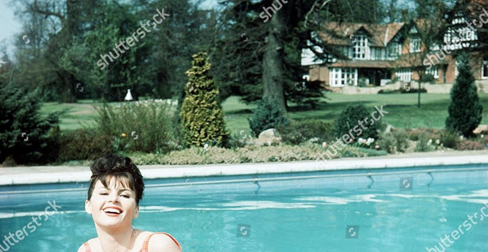
High Point 2, North Hill, Highgate - Drake goes with Milos Kaldorand Ira back to her flat after being released by the police.
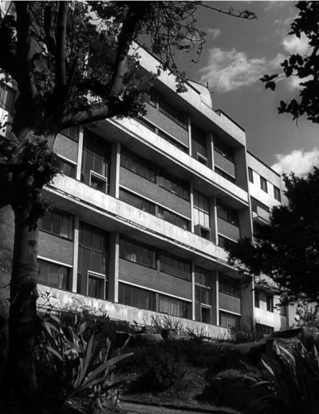
THE SAINT:
The
Abductors (Jeremy Summers: ??)
Unknown 1
– Simon and Madeline drive
to meet Professor Quell, Alain (Nicholas Courtney), Peter (David Grefield)
and Jones
(Dudley Forest) have already kidnapped the professor.
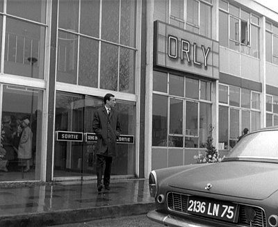
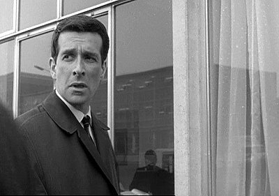
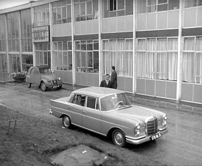
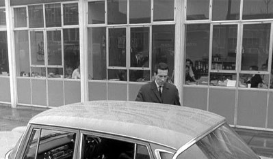
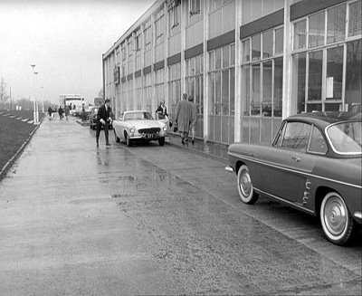
Gravel
Path, Ellesmere Road, Tring, Herts
– Simon drives into the village of Epernay
to ask directions to Chateau Belleville
(Identified by Andrew Chilcott, 14th August 2013)
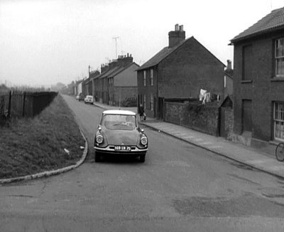
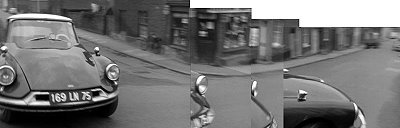
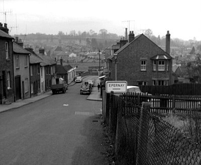
Unknown 2 – On the way to Chateau Belleville near Epernay in his Citroen 2CV, Alain notices he is being followed by Madeline in Simon’s Volvo.
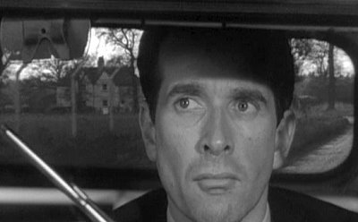
 This is
could be near Chateau Belleville, which was Halton
House, RAF Halton,
Halton
nr. Wendover
This is
could be near Chateau Belleville, which was Halton
House, RAF Halton,
Halton
nr. Wendover
Unknown 3 – On the way to Chateau Belleville near Epernay in his Citroen 2CV, Alain (Nicholas Courtney), notices he is being followed by Madeline in Simon’s Volvo. He parks his car in a ditch, faking an accident, and waits for Madeline (Annette Andre) to arrive.
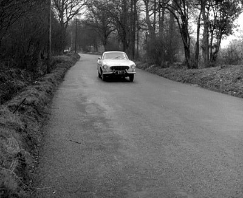
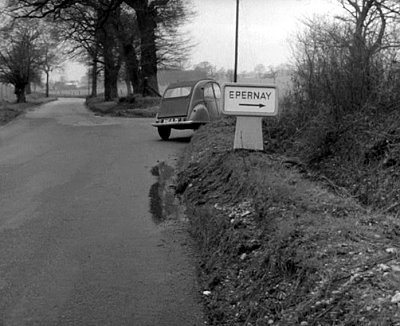
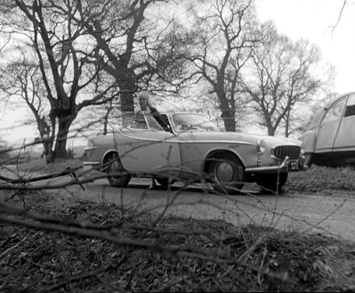
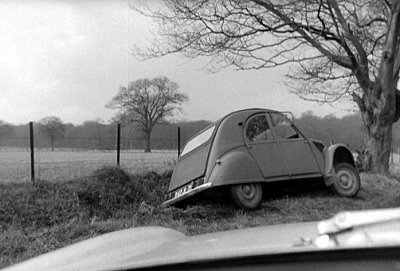
 This is
could be near Chateau Belleville, which was Halton
House, RAF Halton,
Halton
nr. Wendover
This is
could be near Chateau Belleville, which was Halton
House, RAF Halton,
Halton
nr. Wendover
Think you know a spot? Need a bigger image? Email me.
< Previous | Index | Avengerland | Next >
Copyright © 2003 Anthony R. McKay